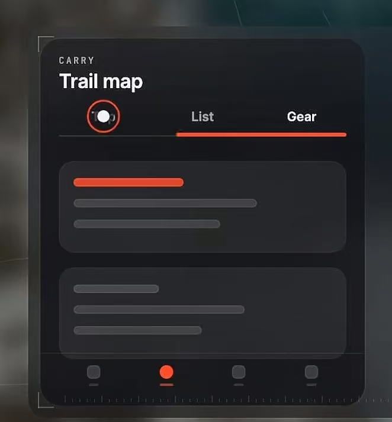

创建入口 v5.3 · 双层面板（扁平化 + 按钮分大小）
真机现在跑线上 1.9.29（2026-10-07 19:32:01 发布），2.0.0 已提审、正在审核中（10-07 22:31:26 提交）；首页还是白胶囊条 + 700rpx 纸白面板；本稿是效果图，代码一行没动。这一稿按你的话改：①链接态撤掉「保存」，进来直接提炼；主动作统一成一枚通栏长条「开始提炼」，链接/文字/多图三态是同一枚钮（同高同色同字同圆角），照片态仍只留 58px 大圆钮「拍照」；②四个态的框体尺寸一模一样，拍完照那一格的构图一个零件没动；③整体扁平——渐变、内高光、投影全清掉，只留单色块 + 一道描边。底下这些还是上一稿换上的现网实物：背景就是包里那张 /assets/home-bg-portrait.jpg，压暗罩七个档位逐字抄 .page-scrim，顶上补系统状态栏、微信胶囊、导航条（标题「图麦笔记」= i18n appName，底色 #181A20 = applyNavForBand 的值），底栏照 chromeOf('tint-paper') 实测色画成浮起胶囊、选中的是第一格「新建」；面板里每句中文出自现网 i18n，每枚图标用现网同一套 Lucide 路径；几何按 750rpx→300px 折算，面板仍是 700rpx 定高、贴底 152rpx，一个尺寸没改。

你给的参考：黑底大圆角面板、标题上一行小字 CARRY、List/Gear 橙色下划线 tab、内层浅一档圆角卡、底部点状栏。抄的是这套结构，装饰件（刻度尺那一类）不抄；标题上那行小字换成官网 .mark 那一个词。
1 · 照片（默认）
唯一留大钮的一态——这里没有输入框，动作就是按快门。左边那句是现网 Tips 第一句拆两行，右边两枚：小圆钮「相册」42px + 大圆钮「拍照」58px
TUMARK
公众号文章 / 网页链接
https://mp.weixin.qq.com/…
输入或粘贴链接后直接提炼
开始提炼
2 · 链接
没有「保存」这一步：链接进来直接按通栏长条「开始提炼」，与多图态那枚同一枚钮；粘贴走长按，不单独占钮
3 · 文字
标题 + 原文两格（都 42px 起）+ 同一枚长条「开始提炼」；说明行在 700rpx 里装不下，省掉（现网全屏页里还在）
4 · 拍照完（选了多张）
框体与其他三态完全同尺寸，构图一个零件没动：缩略图横排 + 圆钮「清空」+ 长条「开始提炼」——这枚长条与链接/文字态是同一枚（同高同色同字），只因左边让位给「清空」短一截
1屏不再是空的。背景 = 包里那张 /assets/home-bg-portrait.jpg（1116×1920，aspectFill），上面那层压暗罩的七个档位（.58/.58/.44/.42/.52/.62/.72）逐字抄 create.wxss 的 .page-scrim；标题那两句、日期那行、中/EN 那枚下划线，字号字色都按 has-bg 翻白之后的令牌给。
2几何按 1rpx=0.4px 折算，全用现网原值：面板高 700rpx=280、贴底 152rpx=60.8、左右各 24rpx；底栏胶囊 bottom 20 / 高 108 / 圆角 44 / 描边 3，图标 40、选中圆底 76。面板一个尺寸没改——所以这一稿落地不用重排整页，只换面板里面。
3面板里每句中文都出自现网 i18n：右上「点空白处收起」= barCollapse；照片态那两行 = Tips 第一句「拍照或截图存进来，会自动提炼成要点」拆行；链接态占位符 = 输入框原样那一串、左下那句 = urlHintIdle；文字态 = writeTitlePh「标题」/ writeBodyPh「把原文贴在这里…」/ manualDesc；多图态那行 = pickedCount「已选 {n} 张 · 可再加」。
4保存这一步撤掉了，全篇只剩三个动作字：「拍照」（捕获，照片态独有）、「开始提炼」（提交，链接/文字/多图三态共用）、「清空」（只清已选的图，不关面板；关面板是点空白处）。链接态不再用现网 t.save；现网那句 urlHintIdle「输入或粘贴链接后可保存」里的"保存"二字要跟着换，我建议新 key 写「输入或粘贴链接后直接提炼」（中英各一份），这条要你拍。「开始提炼」三态是同一枚钮：44px 高、圆角 12、实心橙、13px 字；链接/文字态通栏，多图态因左边让位给「清空」短一截——高、色、字、圆角四个数完全一样。
5三个 tab 名是你给的：照片 = 现网两枚入口（t.takePhoto 拍照 + t.fromAlbum 相册）合并，文字 = 现网「直接写」t.modeWrite。落地要动 modes 那一排和 active 的分型（现网是四档 write/camera/album/url，合并后是三档）。
6图标不是新画的：camera / images / link / pen-line 四条路径逐字取自 create.wxss 那几枚 mask，底栏三枚（plus / rows-3 / user-round）取自 custom-tab-bar，全是 Lucide v1.49.0、24 格、描边 1.6、圆头线帽——所以粗细和现网一模一样。多选那枚 ✕ 是 Lucide 的 x，同一套。
7标题上那行小字换成 TUMARK，抄官网 .mark 的语法（小字 + 大字距 + 一条底线），词也是官网那一个。上一稿我写的「TUMAI MIND」是我自己造的，而且 MIND 在现网是「我的」页那枚魅力值的英文名（i18n brainScore），会撞。
8缩略图按现网那一排放：48px 方块（128rpx）、右上角 ✕ 徽 16px（40rpx、遮罩 rgba(20,20,28,.55) 原值）、右缘一道渐隐表示还能横着滑——现网就是一横排 scroll-view，所以不做「+2」那种收法。两张画成截图样（纸白底 + 一行标题块 + 正文线），因为现网存进来的一半是截图。
9橙这一支要你拍：#E9723D 现在界面上一个像素都没有（10-04 起四套壁纸都带 ramp，五支饱和色只留在海报那条 toneFor），而 create.wxss 里写这个 hex 会被 docs/工具/验-统一录入条.js 第 169–173 行那条「wxss 里没有抄色板里的饱和色」打红。甲：橙当品牌强调色，由 palette 经 style 递进来（和 TIP_DOT 同一套路子），规范里补一句名分；乙：主钮吃 --btn-bg（象牙档 #766948），界面继续零饱和、四套壁纸自动各配各的。另有一支可选：官网 --clay #D2683F，不在 TONES 五支里，尺子不红，暖调跟象牙壁纸同族。
10深色面板 vs 现网纸白面板：现网 .panel 是一张白卡（#fff、只有下面两个圆角，挂在白胶囊条下面）；本稿按你给的参考图翻成独立浮起的深色大面板、四角都圆。落地要改 .panel 的底色与圆角，还要给四套壁纸各配一支面板色（这张深色面板现在不跟主题走）；底栏实测色 #443B25 是暖橄榄，和面板这支冷墨黑 #23252C 不同族，两者挨着只差 9.6px——面板跟底栏走暖、还是底栏跟面板走冷，这一处也要拍。
11文字态少放了两样，先说清：现网那一格是 标题 + 分类 picker + 原文（228rpx）+「原文翻译」开关，700rpx 的面板被标题那块吃掉约 73px 之后装不下四样，本稿只画了 标题 + 原文。三条路：面板加高到 780rpx（照片少露 32px）／分类挪到提炼完再选、开关留下（原文框缩到约 100rpx）／就照本稿，分类默认未分类、开关默认关。这一稿还多省了一样：两格 42px 加长条 44px 吃满内高之后，说明行 manualDesc「写下标题和原文，摘要自动生成」也装不下了，面板里省掉（现网「直接写」全屏页里还在）；链接态内高有剩，那句提示留着。
12扁平化清了哪些东西（逐个点名，方便你要求还原）：大面板去掉了从上到下那层提亮渐变和外落影，只剩单色 #23252C + 一道 14% 纸白描边；内层卡去掉了渐变和落影，只剩单色 #2B2D35 + 一道 10% 描边；输入框去掉了内凹影；小圆钮去掉了「上亮下暗」渐变（.13→.06 纸白）、1px 描边、内高光和 0 2px 6px 落影，改成一块 10% 纸白实心圆；大圆钮去掉了橙色渐变（#F0814C→#E1682F）、内高光、内暗影和 0 8px 18px 那圈橙雾，改成 #E9723D 一个色到底；多图态那根长条同理（原来还带 0 6px 14px 橙雾），灰态从渐变改成一块 10% 纸白；tab 选中那条橙下划线去掉了发光。两处留着渐变，因为它们不是立体感而是内容：缩略图那五张本身是「照片」，右缘那道渐隐表示还能横着滑。还有一处是我擅自跟着改的：底栏浮起胶囊现网有 0 6.4px 17.6px 的落影，这一稿为了全屏一致也去掉了——底栏是现网已有件、不在你这次要改的范围里，要还原现网那层影说一声。
13四个框的尺寸是同一套数：外层面板四态都是 700rpx=280px 定高、贴底 152rpx，内层卡四态都是「面板减掉标题与 tab 之后的剩余高度」，一个态都没单独加高或缩短；单行输入框统一 42px（链接态那一格、文字态标题那一格、小圆钮三者同高）；小圆钮统一 42px 正圆；拍照完那一格（第 4 屏）按你「框体也一样、风格不能改」的话处理：外框尺寸与其他三态相同，里面的构图——缩略图横排 + 「已选 6 张 · 可再加」+ 左边圆钮「清空」+ 右边长条「开始提炼」——一个零件没挪、没删、没换字，只把渐变和落影去掉。